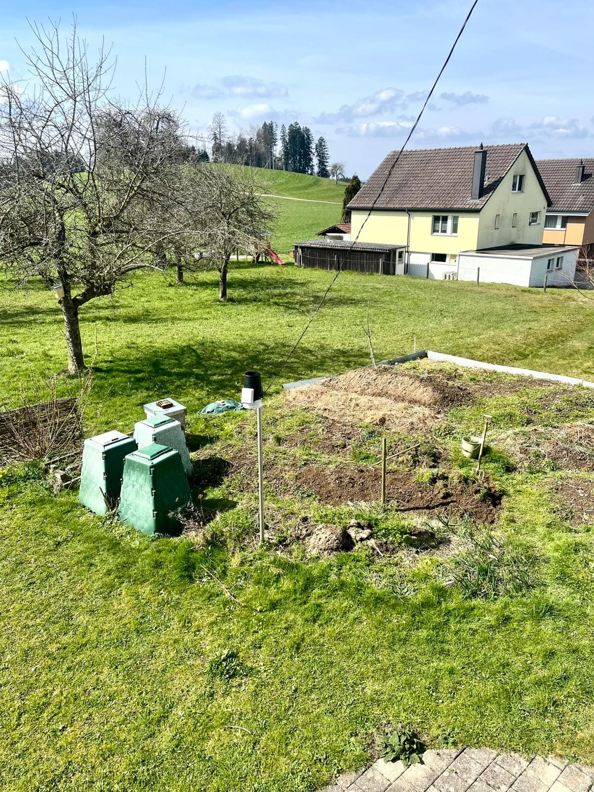

Wetter Niederhelfenschwil
Aktuelle Messwerte
Historische Messwerte
Meilensteine der Wetterstation
Eine Zeitleiste mit wichtigen Ausbauschritten, Sensorwechseln und Softwareupdates der Station in Niederhelfenschwil.
Hintergrundinformationen zur Wetterstation
Altes Setup
- Messstandort auf dem Dach
- Gesamthoehe 8.5 m über Boden
- Station stand 1.5 m über dem Dachrand
- Temperaturfühler auf der dachabgewandten Seite
- Datenaktualisierung alle 10 Minuten
Neues Setup
- Regen und Temperatur Messung im Garten
- Neue allgemeine Messhoehe 2 m
- Windmessung weiterhin auf 8.5 m über Boden
- Bessere Vergleichbarkeit mit genormten Wetterstationen
- Datenaktualisierung alle 10 Minuten

